A mechanical running shoe sole that reached 87.4% energy return, beating the Nike Alphafly benchmark in our testing. The design was iterated through a digital twin, a first principles thermodynamic model in MATLAB validated against hardware, and the project won the Innovation in Engineering award.
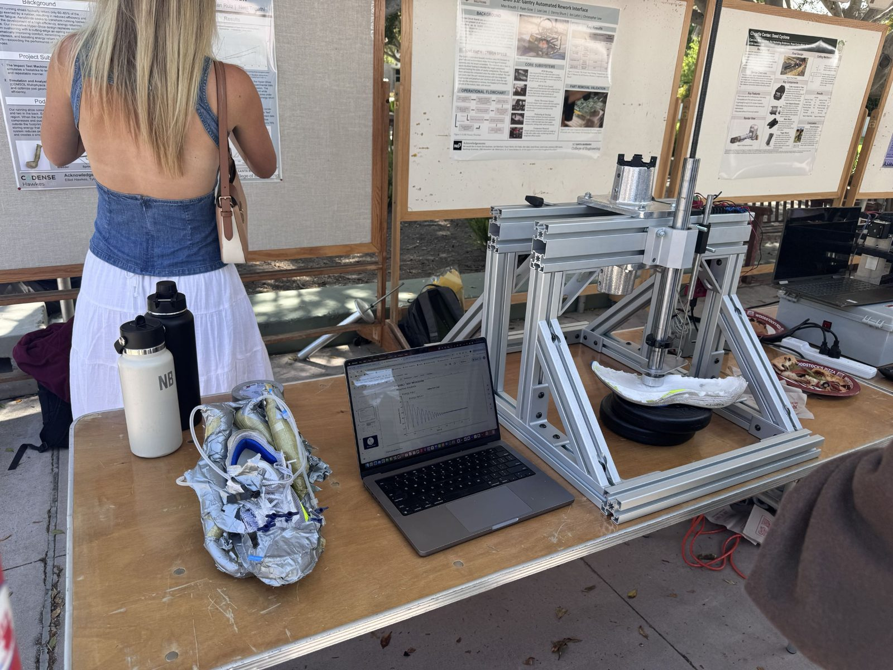
The tested prototype, alongside impact machine data at a lab open house.
Impact test machine
Capstone · 2024–2025
To prove the sole's numbers we built a gravity driven impact test machine compliant with ASTM F1976, taking it from SolidWorks CAD with full GD&T drawings and a BOM through machining and assembly. It was instrumented with an LVDT, load cell, and DAQ, feeding a semi-automatic MATLAB tool I wrote for energy return, force displacement, and damping analysis.
The impact rod, LVDT, bearing, electronics, and force plate subsystems, color-coded on the aluminum extrusion frame.More photos
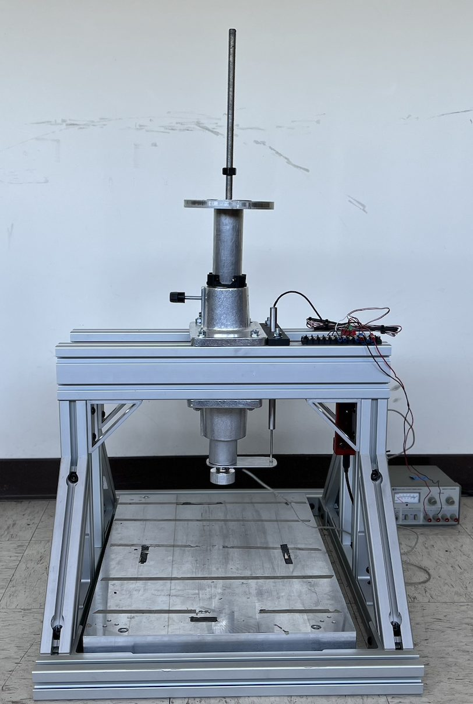
The assembled machine, front view.
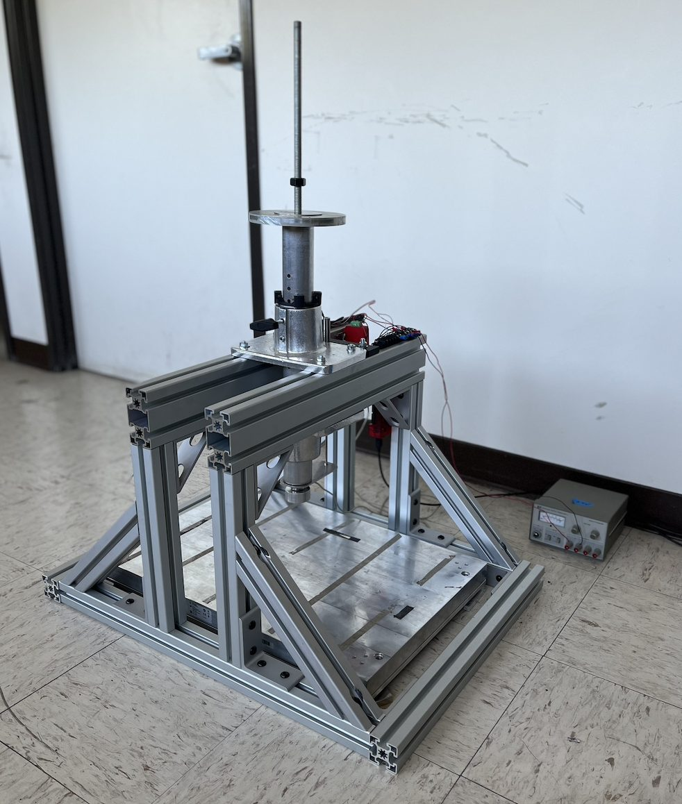
The assembled machine, from an angle.
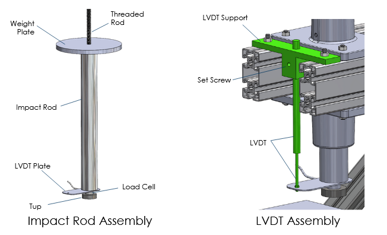
Impact rod assembly and LVDT assembly, labeled.
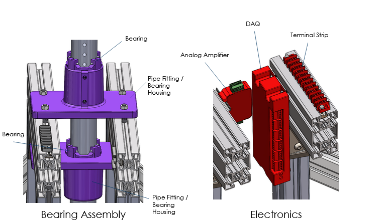
Bearing assembly and electronics, labeled.
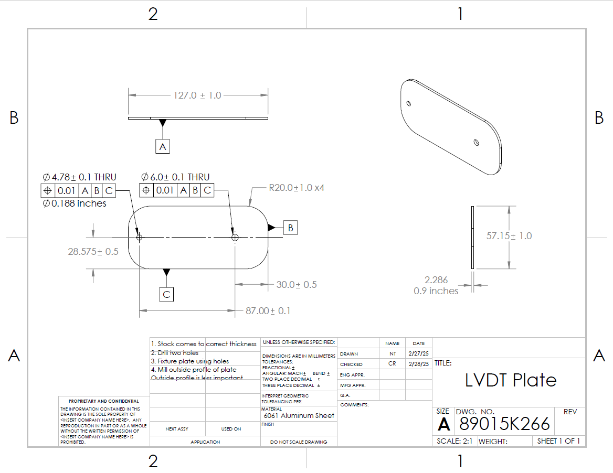
An example part drawing, the LVDT plate, with full GD&T.
Haptic force display
Course project · 2025
A handheld device that creates the sensation of being pulled in a direction using asymmetric acceleration of an eccentric mass through a geared transmission, in a 61 gram package. The design improves on a device published by Amemiya et al., which uses translational rather than rotational motion and is bulkier, with more mass and less force perception. After several physical prototypes, mine outperformed the Amemiya device in user perception testing, producing around 2.5 N of peak force, about what a cup of peanut butter weighs, from a 0.2 lb eccentric mass swinging at 31 in/s at a 0.865 inch radius. However, the kick effect bleeds slightly into the next half rotation, which reduces its efficacy somewhat.
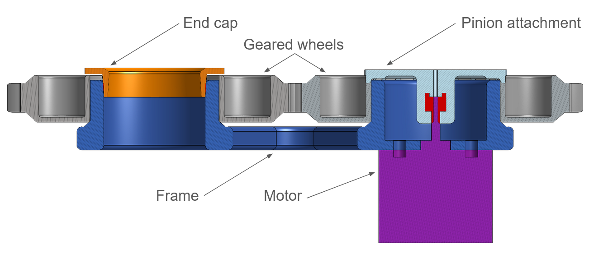
Cross section of the transmission: motor, pinion attachment, geared wheels, frame, and end cap.The assembled prototype, breadboard control electronics included.
Production tooling at CelLink
Internship · Summer 2025
As an equipment engineering intern I designed a tool-change mechanism that resolved a production bottleneck on a robotic circuit assembler, cutting cycle time by 70%, along with a mechanical locking system for datuming thin, flimsy parts at volume and a roll-to-roll tool upgrade with full GD&T drawings. Fabrication ran through a Tormach CNC mill, a manual lathe, and plenty of hand work.
E-ink desk display
Personal project · in progress
A desk display built from scratch around an e-ink panel, firmware included. This one is in progress, and I'm planning to develop it in the open on social media, so the writeup will grow as the build does.
Motor to gearbox adaptor
Hawkes Lab · 2024
A tiny toleranced adaptor mounting a small motor and ESC to an existing gearbox, done as parallel 3D printed and machined designs with a modified rotor shaft. Small enough to be mostly a tolerancing exercise.
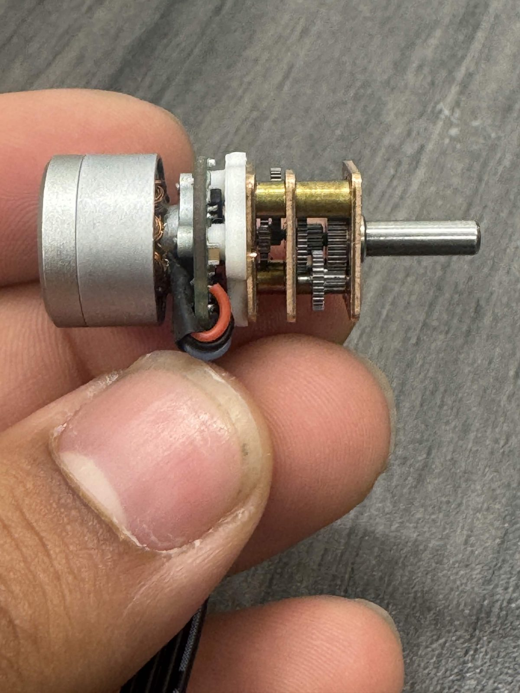
The motor and gearbox, geartrain and output shaft visible.
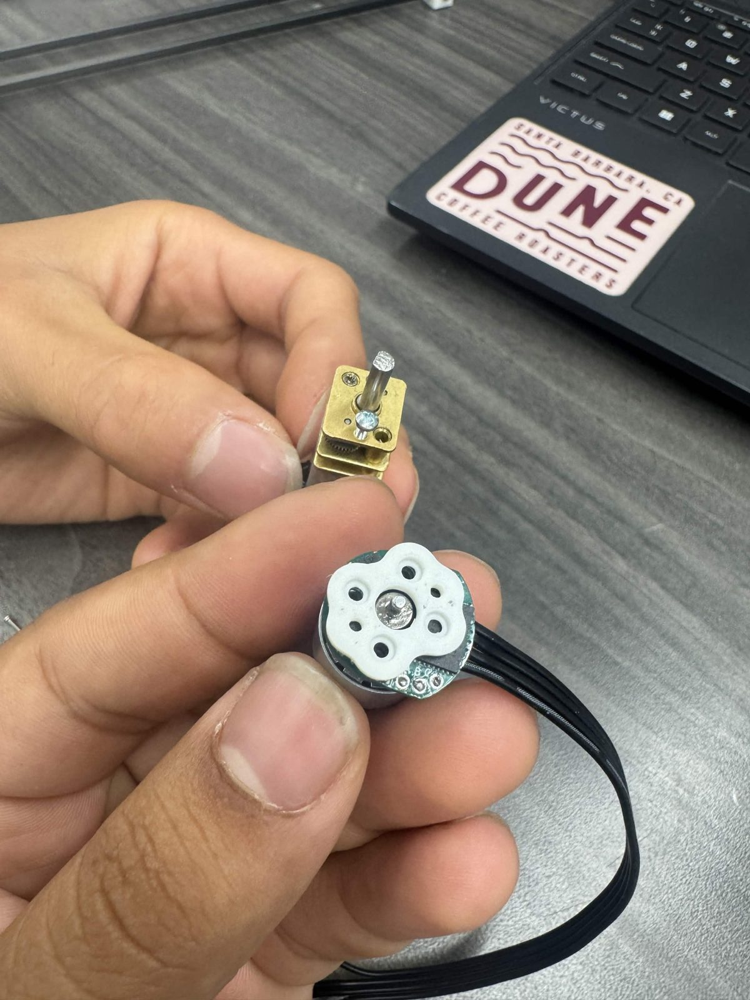
The motor and gearbox components before assembly.
BMX fork FEA optimization
ME 108 course project
For an ME 108 course project done with a partner, I ran finite element analysis in SolidWorks on a freestyle BMX bike fork in AISI 4130 Chromoly steel, loading it to approximate an 80 kg rider performing a nose manual. The stock design held with a safety factor of 55x, which was likely overkill for a single static load, though fatigue over many trick cycles is a separate concern. For the redesign we added fillets at the joints and thickened the tube that mounts to the frame, which moved the location of maximum stress and made the model more accurate, as welded joints look like wide fillets in practice.
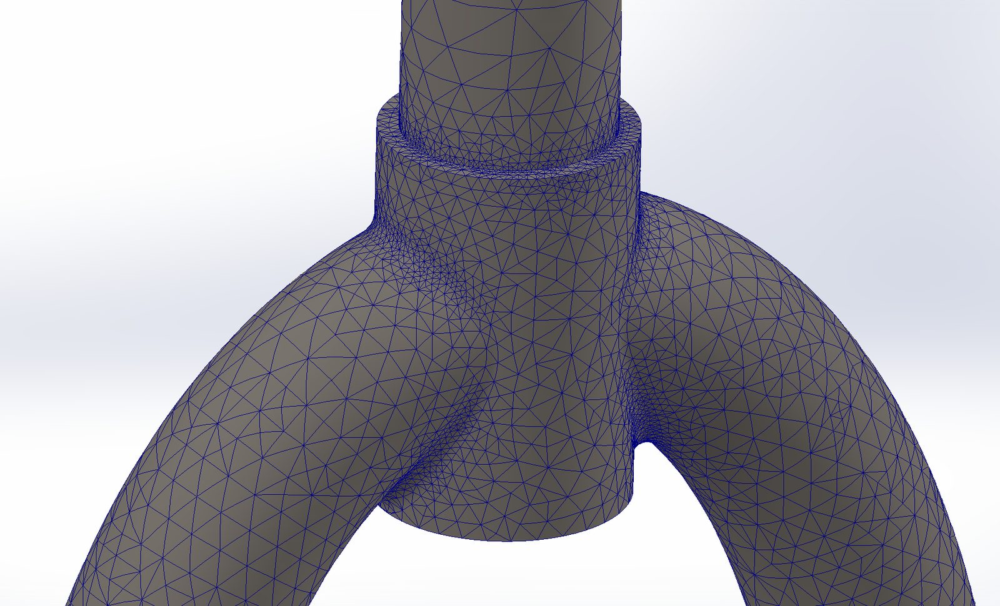
The h-adaptive mesh at the crown, where it converged to 60,711 elements over 5 iterations.
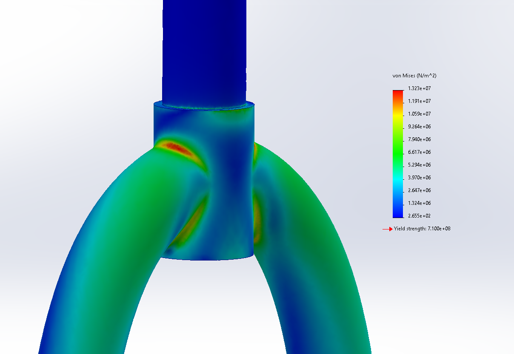
Von Mises stress under the 800 N nose manual load, maxing at 13.23 MPa against a 710 MPa yield strength.
Scramjet combustor CFD validation
Fluid Physics Lab, National Taiwan University · Summer 2024
Over the summer of 2024 I worked in the Fluid Physics Lab at National Taiwan University under Professor Kuo-Long Pan, validating a 2D Ansys Fluent simulation of a scramjet combustor against a prior master's thesis from the same lab. The combustor uses a triangular strut to ram and compress incoming supersonic air, followed by an expanding nozzle that accelerates the flow, with a hydrogen injector positioned behind the strut to feed the H2-O2 combustion reaction. I replicated the thesis's operating conditions by tuning the front air inlet to Mach 2, or 730 m/s, at a mass flow of 18.1 kg/s, and the hydrogen injector to Mach 1, or 1201 m/s, with the exhaust outlet set to atmospheric pressure, running the simulation in 2D rather than 3D for speed, with Ansys extending the contour into a 1 meter wide volume to prevent edge effects, over an adaptive mesh split into three regions with element sizes from 2mm down to 0.2mm where resolution mattered most. The simulation itself ran in two phases: first a cold flow steady state solve over 500 iterations validated the pressure distribution against the thesis's experimental data, then a combustion simulation using the transient solver, igniting a region set to 2000 K and tracking a 9 step H2/O2 reaction mechanism, validated the temperature distribution the same way, and both results matched the experimental benchmarks from the reference thesis.
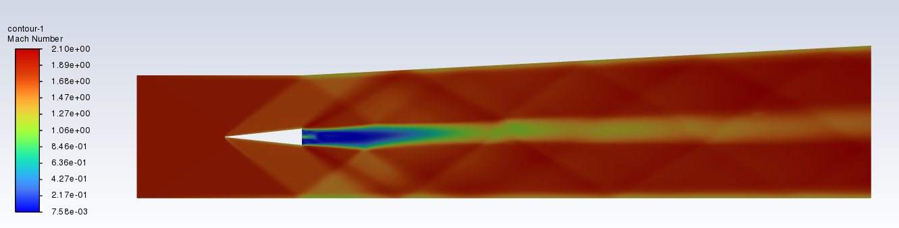
Mach number contour through the strut and combustor, cold flow case.
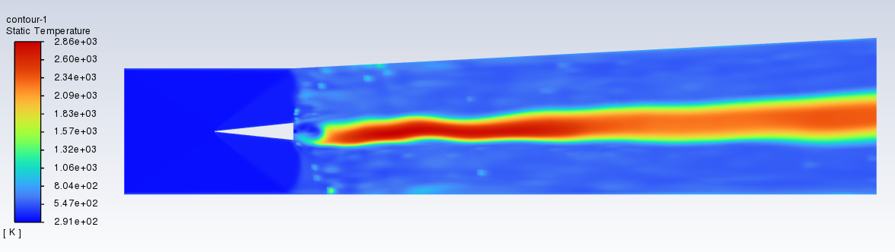
Static temperature contour once the H2-O2 combustion reaction ignites.